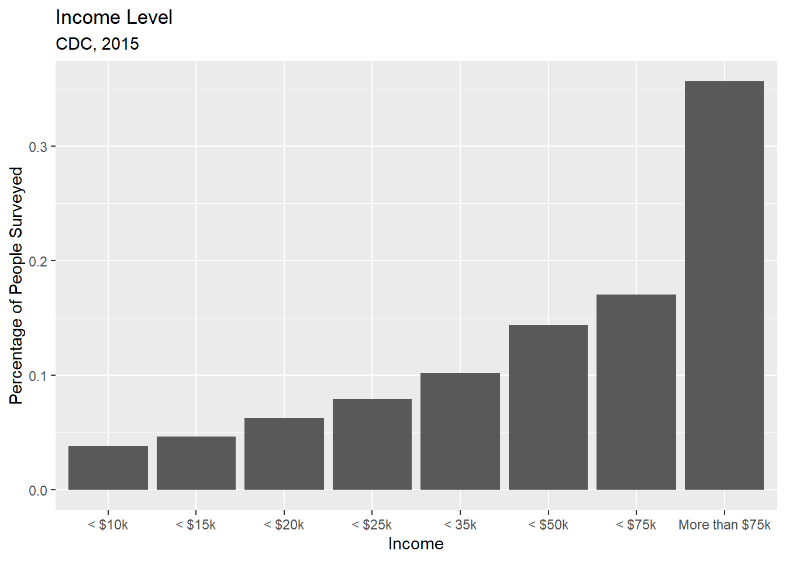
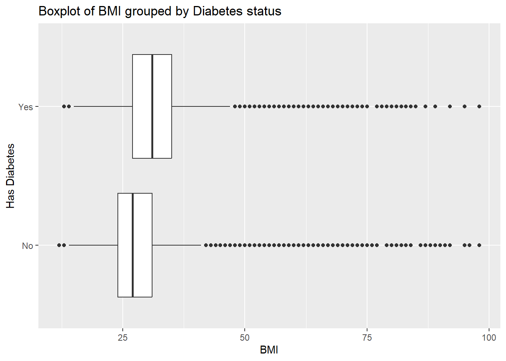

It is vitally important in the medical field to have awareness of specific conditions and the risks that individuals may be predisposed to as they go about their lives. One such condition is diabetes, one of the most widespread chronic diseases in the United States. Diabetes can present many health risks to those who have it, and as such there is a vested interest for many people to try and find ways to predict when an individual has a high-risk of developing and/or having diabetes. While it’s unlikely that we will ever be able to perfectly predict whether someone has diabetes or not, we can certainly give it our best shot.
The data we have to work with consists of 253,680 survey responses from the Behavioral Risk Factor Surveillance System (BRFSS) conducted by the Center for Disease Control and Prevention (CDC) in 2015. The survey focuses on potential indicators for diabetes in an individual’s medical history via risk factors such as having high blood pressure, high cholesterol, or having had a stroke/heart attack in their past. There are also demographic indicators present such as an individual’s sex, age, education level, or current income. The goal of this survey is to find relationships between these medical/demographic indicators to determine which factors most clearly indicated a high risk for diabetes.
To begin, we will choose a subset of these factors to briefly explore in order to get a sense of what factors may have the strongest effect on someone’s risk for developing diabetes:
Diabetes_binary: this is the variable that will act as the response. It is a two-level factor where 0 represents an individual without diabetes and 1 represents an individual with pre-diabetes or diabetes.
BMI: studies such as this one from the University of Gothenburg in Sweden suggest that BMI may be one of the strongest indicators for diabetes.
HighChol: short for High Cholesterol, this factor was also named as an influential factor in the study mentioned previously.
Income: an individual’s ability to treat any health conditions that may arise can only be as comprehensive as they can afford it to be. As such, it is worth exploring whether an individual’s income has any sort of relationship with the presence of diabetes as a health condition.
By exploring these factors individually and in relation to the presence of diabetes in an individual, we can hopefully get a sense of how these predictors have an effect on the presence of diabetes and how much they will affect our models when we reach that portion of this analysis.
Now that our data is cleaned up, let’s start by taking a look at some summary statistics. First off, let’s observe the presence of diabetes in Americans:
summary(diabetes$Diabetes_binary)
No Yes
218334 35346
This shows us that 0.1396878% of the people surveyed had diabetes or pre-diabetes. Let’s compare this to those with high cholesterol:
summary(diabetes$HighChol)
Low High
146089 107591
This equates to 0.4241209% of people surveyed, which is a lot more prevalent than diabetes. This isn’t too unexpected since diabetes is a specific condition whereas high cholesterol can be a cause and symptom of many conditions. Now let’s look at where these overlap:
#Calculate rate of diabetes in high-cholesterol individualspaste("Rate of diabetes in patients with high cholesterol: ", round(con.tab[2,2] /sum(con.tab[2,1], con.tab[2,2]), 2), "%", sep ="")
[1] "Rate of diabetes in patients with high cholesterol: 0.22%"
We can see that the rate went up by about 10%, which feels like a large climb. We should compare this to another two-level factor, such as whether people eat at least 1 serving of fruits per day.
#Calculate rate of diabetes in high-cholesterol individualspaste("Rate of diabetes in patients who eat at least one serving of fruit per day: ", round(con.tab2[2,2] /sum(con.tab2[2,1], con.tab2[2,2]), 2), "%", sep ="")
[1] "Rate of diabetes in patients who eat at least one serving of fruit per day: 0.13%"
We see here that the rate stayed roughly similar to the overall rate of diabetes. As such, we can see that having a high cholesterol level can be a valuable predictor when it comes time to model with this data.
Let’s also take a look at income as a predictor. First, a look at how income is distributed in this survey:
#Plot a histogram of income levelsggplot(data = diabetes, aes(x = Income)) +geom_histogram(stat ="count", aes(y =after_stat(count /sum(count)))) +#The after_stat function allows us to graph in terms of %labs(title ="Income Level", subtitle ="CDC, 2015") +ylab("Percentage of People Surveyed")

There’s a very clear left skew in this data. Approximately 40% of people surveyed were making more than $75,000/year in 2015. This means that, if the rate of people getting diabetes was the same across income levels, we should see that most of them are from that top income bracket just because it comprises such a large amount of our observations. However, if income levels do have an effect, we might expect to see deviations from the overall rate, especially at lower income brackets. Let’s take a look now:
#Contingency Table of Income vs Diabetescon.tab3 <-table(diabetes$Income, diabetes$Diabetes_binary)percent <- con.tab3[,2] / (con.tab3[,1] + con.tab3[,2])tab <-cbind(con.tab3, percent)tab
This is a significant departure from the raw income data! The percent column shown above is the rate of diabetes within each income level. At first, this looks to be expected because the group with the highest raw number of people with diabetes is the highest income bracket. However, when we account for rates of diabetes instead of a simple count, we see a clearer picture. Keeping in mind that the overall rate is about 13%, we see that rates are higher at lower income levels, while they are significantly lower at the highest income level. Likely reasons for this include a lack of access to healthcare and resources to stay healthy.
Now let’s look at BMI. As an indicator of obesity and general well-being, it would be logical to assume that it has an outsized effect on the rate of diabetes prevalence in the United States. First, let’s take a look at our BMI data by itself:
Min. 1st Qu. Median Mean 3rd Qu. Max.
12.00 24.00 27.00 28.38 31.00 98.00
We see a wide range of BMIs in our data, with a mean around 28.38 and an IQR of 7. Now let’s see what happens if we split our data up into those with diabetes (or pre-diabetes) and those without.
ggplot(data = diabetes, aes(x = BMI, y = Diabetes_binary)) +geom_boxplot() +labs(title ="Boxplot of BMI grouped by Diabetes status") +ylab("Has Diabetes")

Once again, we see similar shapes with a lot of potential outliers to the higher extremes. However, we do see that the mean BMI notably shifts up to approximately 30-32, which does indicate that having a higher BMI could be an indicator for higher rates of diabetes.
With this information, we’ve confirmed our prior inclinations that high cholesterol, higher BMIs, and lower income could have a notable effect on our modeling for this diabetes data, as each indicator shows a significant change in diabetes rates compared to the overall rate when grouped up by diagnosis.